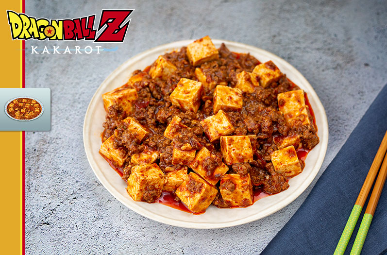

Home
DRAGON BALL Z: KAKAROT – BURNING TOFU

Inspired by Dragon Ball Z: Kakarot, this recipe is designed to create an amazing meal that will boost your stats!
Ingredients
- 2 tsp sichuan peppercorns
- 1 star anise
- ½ tsp fennel seeds
- 2 cloves
- 2 tsp sugar
- 2 tbsp gochugaru – korean hot pepper flakes
- 2 tbsp spicy doubanjiang – fermented bean paste with chili peppers
- 1 tbsp gochujang – korean fermented chili paste
- 1 tsp sesame oil
- 2 tsp shaoxing wine – chinese cooking wine (can substitute with dry sherry)
- 1 tsp soy sauce
- ⅔ cup chicken broth
- 2 scallions, minced – dark green part separated from other parts
- 4 garlic cloves, minced
- 1 inch piece of ginger, minced
- 1 lb ground lamb
- 14 oz tofu, cut into bite sized cubes
- 2 tsp cornstarch
- 2 tbsp water
Instructions
- Place the sichuan peppercorns, star anise, fennel seeds, and clove in a spice grinder and blend until the
peppercorns have grinded. Transfer to a bowl and mix together with the sugar and gochugaru. Set aside.
- Combine the doubanjiang, gochujang, sesame oil, shaoxing wine, soy sauce, and chicken broth together. Set
aside.
- Heat a stainless steel pan with 2 tablespoons of canola oil over high heat. Add the light part of the
scallions, garlic, and ginger. Cook until the garlic softens. Add the lamb.
- Add the spicy mixture and mix together. Cook until the lamb is cooked through. Add the sauce mixture and mix
well. Let simmer for 3 minutes.
- Whisk together the water and cornstarch in a small bowl. Add to the pan and mix together until the sauce has
thickened.
- Add the tofu and gently mix in. Cook for 3-5 minutes or until the tofu has heated through. Serve on top of a
bowl with rice.
Home